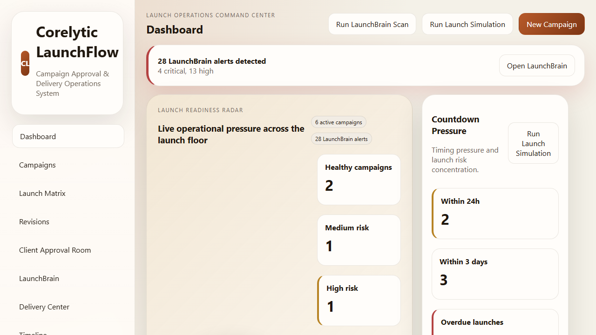
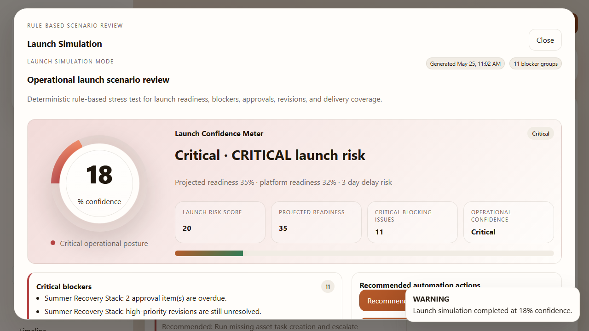

Dashboard command view
Launch Readiness Radar, urgent actions, and campaign posture.
Offline Launch Operations Control
Corelytic LaunchFlow is an HTML5 product built for launch readiness, revision pressure, approvals, blockers, final delivery, and archive reporting. It works directly from file:// or a local web server, stores data locally, and uses a deterministic rule-based LaunchBrain Automation Engine rather than external APIs or AI services.
1. Product Overview
Corelytic LaunchFlow helps marketing agencies, creative studios, e-commerce teams, freelance marketers, and product launch operators control the entire pre-launch sequence from one local workspace: campaign planning, asset readiness, client approval handling, revision pressure control, launch blocker visibility, and final delivery with archive reporting.
2. Who It Is For
3. Installation
MainFiles/index.html directly in a modern browser, or serve the package from a local web server.4. Folder Structure
| Path | Purpose |
|---|---|
MainFiles/ | Main buyer package including the application, documentation, text notes, assets, and marketing screenshots. |
MainFiles/assets/ | Application CSS and JavaScript modules. |
MainFiles/screenshots/ | Marketing screenshots for product presentation and buyer review. |
Demo/ | Standalone demo copy that works independently. |
PreviewAssets/ | Marketplace thumbnail and preview graphics. |
FINAL_RELEASE_REPORT.txt | Release manager summary with QA, packaging, and final submit status. |
5. First Launch Guide
6. Dashboard Overview
7. Campaigns Module
The Campaigns route is where users create and maintain campaign records. Campaigns include title, client, owner, launch date, platform targets, status, readiness score, risk level, and notes.
8. Launch Matrix
The Launch Matrix shows platform readiness across Instagram Feed, Instagram Story, TikTok, YouTube Shorts, Meta Ads, LinkedIn, Email Campaign, and Landing Page.
Every status update immediately recalculates campaign readiness and risk.
9. Revision Workflow
10. Client Approval Room
11. LaunchBrain Automation Engine
LaunchBrain is a deterministic rule engine that scans the workspace and detects operational risks.
12. Launch Simulation Mode
Launch Simulation Mode opens as a premium full-screen panel and runs a staged scan sequence before showing the final report.
13. Delivery Center
14. Timeline
The Timeline route records campaign creation, status changes, asset updates, approvals, revision events, LaunchBrain alerts, automation runs, delivery acceptance, and backup actions. Users can filter by campaign and event type.
15. Reports & Export
16. Settings / Backup
17. Import / Export JSON
Use JSON export when you want a workspace backup that can be moved between machines or archived outside the browser. Import confirms overwrite before replacing the current workspace state.
18. Snapshots
Snapshots are lightweight local save points stored separately from the main workspace record. They are useful for testing launch scenarios and restoring after experimental changes.
19. Theme & Density
Theme and density choices persist locally through LocalStorage. Buyers can switch between light and dark presentation, and between comfortable and compact density, without editing code.
20. Customization Guide
MainFiles/assets/css/styles.css to change colors, spacing, shadows, and card styling.PreviewAssets/ if branding needs to match your own profile.seed-data.js for different default campaigns and clients.launchbrain.js for rule adjustments.automations.js to refine local automation behavior.21. Data Storage Explanation
All workspace data is saved in browser LocalStorage, including campaigns, matrix items, revisions, approvals, deliveries, timeline history, snapshots, and UI preferences. There is no remote sync or server-side storage in this product version.
22. Troubleshooting
file://.23. Browser Support
The product is designed to work from both file:// and local server mode.
24. FAQ
No. Everything runs locally in the browser.
No. LaunchBrain is a deterministic rule-based automation engine.
Yes. You can edit the seed data or import a workspace JSON file.
Yes, as long as LocalStorage is available.
25. Support Notes
Support requests should include the browser name, whether the product was opened with file:// or local server mode, and whether the issue appeared after import, reset, or manual customization.
26. Changelog Summary
Version 1.0.0 is the initial release and includes the operational dashboard, campaigns module, Launch Matrix, revisions workflow, client approval room, LaunchBrain Automation Engine, Launch Simulation Mode, delivery center, timeline, reports, settings, backup, seeded demo data, and offline packaging.
27. Credits / License Notes
This product is built with HTML5, CSS3, Vanilla JavaScript, and browser LocalStorage only. No external framework, no package manager runtime dependency, and no remote API dependency are required.
01-dashboard-launch-radar.png02-launchbrain-risk-detection.png03-launch-simulation-mode.png04-launch-matrix-platform-readiness.png05-revision-pressure-workflow.png06-client-approval-room.png07-delivery-center-handoff.png08-reports-and-exports.png
